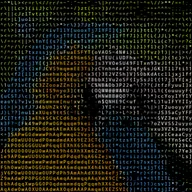
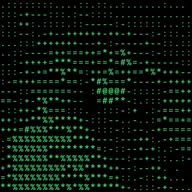
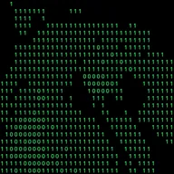
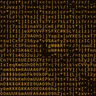
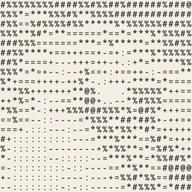
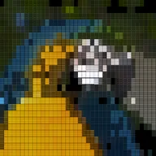
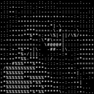

ASCII

Maakt van de laag tekstkunst van letters en symbolen: lichtere delen krijgen vollere tekens. Grootte bepaalt hoe breed elk teken op de laag is, zodat de tekens meebewegen, -draaien en -schalen. Kleur behoudt de eigen kleuren van het beeld of gebruikt één kleur, en Randlijnen tekent contouren met de tekens | - / en \.
ASCII maakt van een laag tekstkunst van letters en symbolen: lichtere delen krijgen vollere tekens. Het werkt op video's, foto's, tekst en vormen.
- Grootte is hoe breed elk teken is, gemeten op de laag, zodat de tekens meebewegen, -draaien en -schalen. Kleinere groottes houden meer detail.
- Tekens kiest de set: Gedetailleerd, Eenvoudig, Blokken, Binair of Aangepast, waarbij je zelf tekens typt.
- Kleur houdt de eigen kleuren van het beeld (Origineel) of tekent elk teken in één Tekstkleur. Achtergrond is Geen, zodat de laag tussen de tekens door zichtbaar blijft, of een Achtergrondkleur.
- Contrast, Helderheid en Omkeren bepalen welk teken elk deel krijgt. Randlijnen tekent contouren met de tekens
|,-,/en\.
De voorinstellingen zijn Terminal, Binaire regen, Amber monitor, Krant, Blokken en Lijntekening.
Instellingen
| Instelling | Type | Bereik | Standaard |
|---|---|---|---|
| Grootte | Getal | 4 px tot 200 px | 12 px |
| Tekens | Keuze | Gedetailleerd, Eenvoudig, Blokken, Binair, Aangepast | Gedetailleerd |
| Eigen tekens | Tekst | – | .:-=+*#%@ |
| Kleur | Keuze | Origineel, Eén kleur | Origineel |
| Tekstkleur | Kleur | – | #FFFFFF |
| Achtergrond | Keuze | Geen, Kleur | Kleur |
| Achtergrondkleur | Kleur | – | #000000 |
| Contrast | Getal | 0 tot 4 | 1.2 |
| Helderheid | Getal | -100% tot 100% | 0% |
| Omkeren | Aan of uit | – | Uit |
| Randlijnen | Getal | 0% tot 100% | 0% |
Voorinstellingen
Kies er een op de detailpagina van het effect in de Effectenbibliotheek. Elke voorinstelling is een kant-en-klare instelling die je daarna nog kunt aanpassen.

Terminal
Binaire regen
Amber monitor
Krant
Blokken
Lijntekening